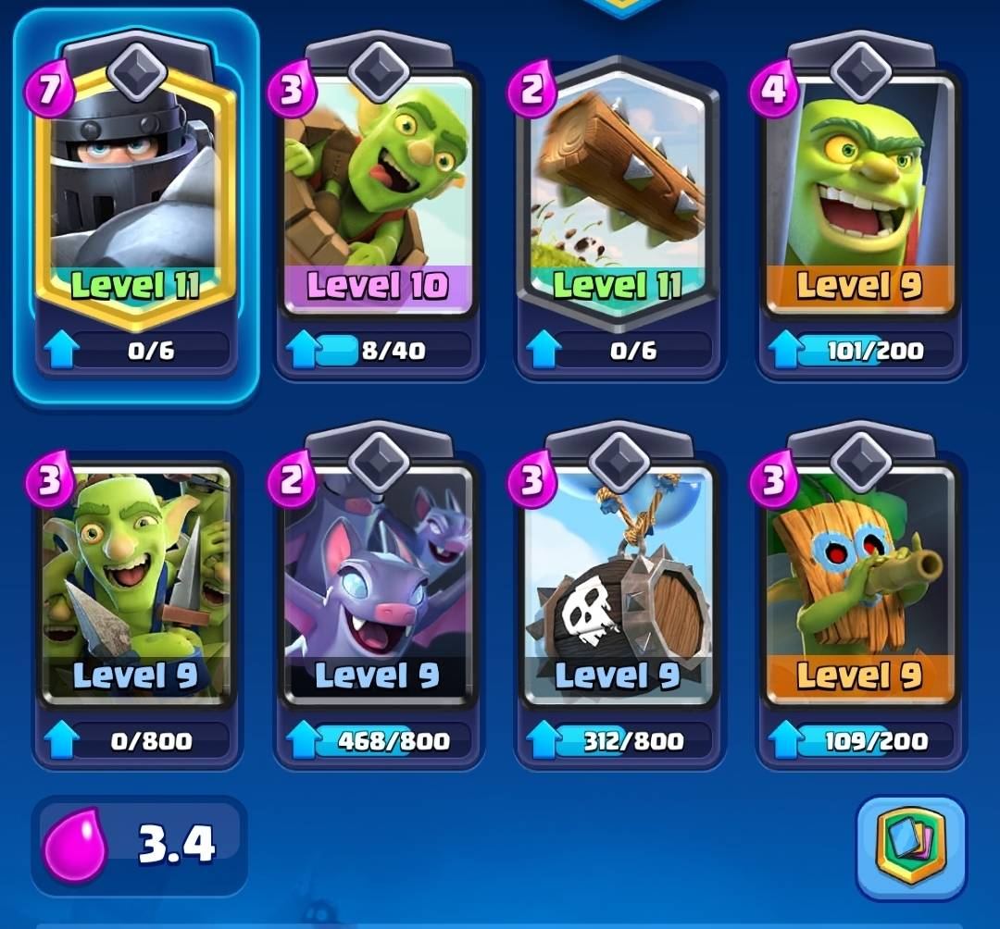

In this project you can see the different decks that we use in the game CLash Royale. Our differences in decks highlight the different play styles and different approaches we have to the game. Even though we have different decks, we are united by the love of the game and the fun we share while playing it!
In this page you can see the deck that I personally use. I find this deck really fun and easy to use. Not only has this deck helped me climb through the arenas, but it also compliments my way of playing and my strategic thinking.
*Although it's important to have a main deck, it's just as important to learn and study new ones. This is because some decks may not work as well in higher arenas. Another reason is that learning the more meta decks can help you understand how to counter them when you face opponents who use them.